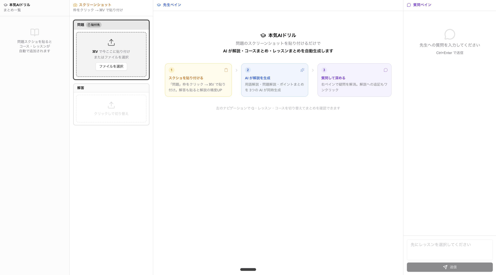
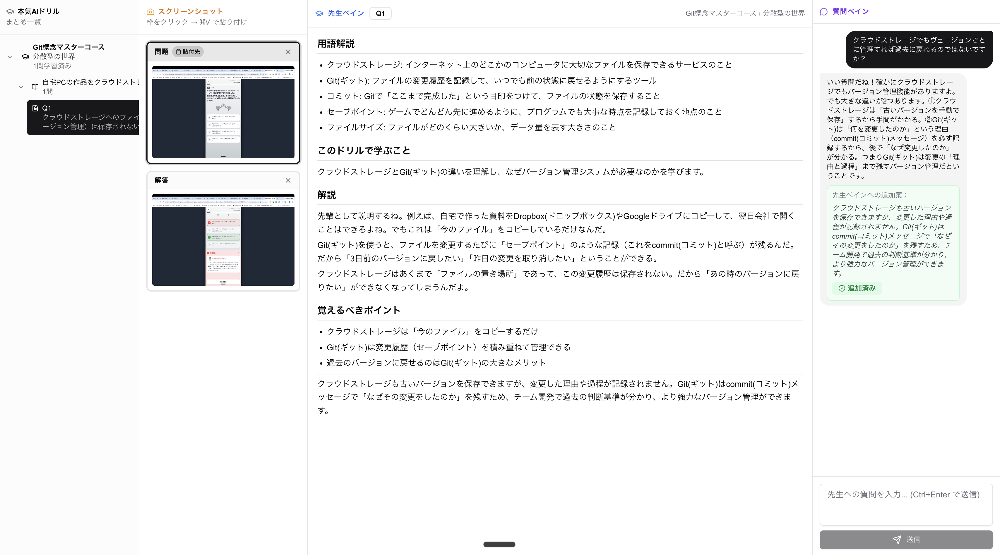

ツールの画面（4ペイン構成）
① ナビ（自動生成）
Git完全マスター
▸ 分散型の世界
Q1 クラウドスト...
スクショを貼ると自動で追加
② スクリーンショット
問題 ⌘V
解答 ⌘V
コースマップ（未実装）
※ スクショを貼ると左ナビにシリーズ・コース・レッスン・Q番号が自動生成される。
ただし現状2枚対応のみ。コースマップ（3枚目）未実装のためシリーズまで読み取れない課題がある。
before / after
✕ Before — スクショなし（初期状態）

問題・解答スロットが空。先生ペインにはウェルカム画面のみ。左ナビにも何も表示されていない。
✓ After — スクショ貼り付け後

左ナビに「Git概念マスターコース ▸ 分散型の世界 ▸ Q1」が自動生成。先生ペインに用語解説・解説・ポイントが自動生成。質問への回答も先生ペインに追記済み。
最大の売り — 育成型ツール
🌱 質問するたびに「自分だけの解説」が育つ
スクショを貼った時点で解説が自動生成されるが、それがゴールではない。疑問を質問すると、その回答が先生ペインの解説に追記される。Q1→Q2→Q3と進むにつれ、コース・レッスンごとのまとめも更新され続ける。使えば使うほど、自分だけの教科書になっていく。
スクショ貼る→
解説が生成→
疑問を質問→
先生ペインに追記→
まとめが育つ
解決する課題・工夫点・苦戦点
解決する課題
ADSドリルを解くとき、問題の意味が分からなくても先生がいない。スクショを貼るだけで即解説が得られる環境を作った
工夫したポイント
「用語解説」「問題解説」「ポイントまとめ」の3つをAIが同時並行で考えるため速い。レッスン・コースごとのまとめ自動生成。質問回答を先生ペインへ随時追記する育成型設計
育成型 / 高速
苦戦したポイント
先生ペインが現在テキストのみ。図解対応が未実装。コースマップ（3枚目スロット）未実装のため、2枚のスクショだけではシリーズ名まで読み取れずレッスン情報の引き継ぎが課題
フェーズ2で対応予定
作ってみた感想
Claude Codeに頼りながら進めてしまい、Vercel・Next.jsといった技術を本当に理解できているか不安が残る。見た目や動作の感触は良く、手応えは感じている。ただ、保存機能が実装できないとこのツールを作った意味がなくなるという危機感もある。「理解しないまま進めない」というスクールの方針を改めて意識しながら、フェーズ2に臨みたい。
次のステップ（フェーズ2）
発表後に取り組む課題
先生ペインに図解を交えた解説の実装
3スロット化（コースマップ画像）でシリーズ・コース・レッスン情報を自動認識
セッション内コンテキスト引き継ぎ（Q1→Q2→Q3の流れを記憶）
データ保存機能（過去のドリルを振り返れる教科書化）
使用技術
Next.js 14
TypeScript
shadcn/ui
Tailwind CSS
Anthropic API
Vercel
GitHub